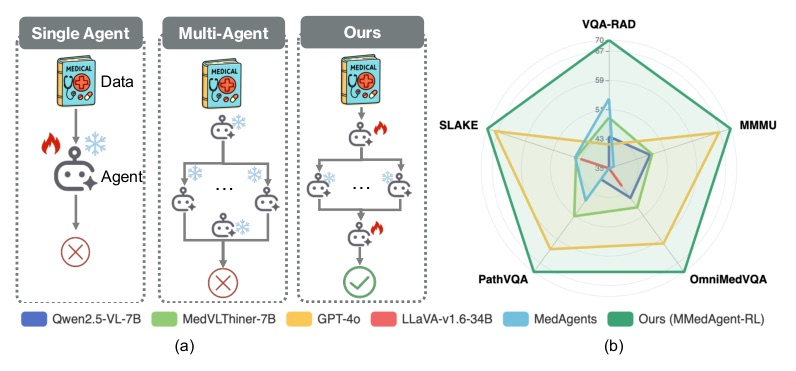
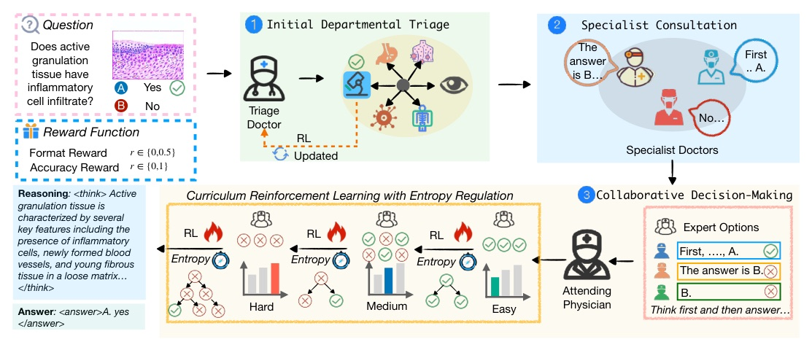
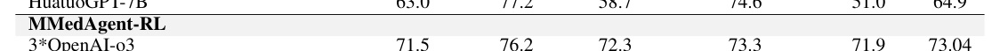

用 RL 訓練「多代理協作本身」：不是讓 specialist 多投幾票，而是讓 attending GP 學會何時相信、何時反駁。
把固定 GP -> Specialist -> GP workflow，改造成可訓練的 collaboration policy。
核心技巧是 C-MARL：依 specialist 可靠度分成 easy / medium / hard，動態調整 entropy，讓 attending physician 從「模仿正確專家」逐步學到「修正錯誤共識」。


Entropy 是 attending physician 的「懷疑程度」控制器。
gamma_s 不是固定超參，而是根據 specialist reliability 動態改變：可靠時少探索、衝突時保留多樣性、全錯時強迫模型離開專家答案。
| Stage | specialist accuracy | entropy gamma_s | intuition |
|---|---|---|---|
| Easy | s = 1 | 0.0001 | imitate reliable specialists |
| Medium | 0 < s < 1 | 0.005 | keep diversity under conflict |
| Hard | s = 0 | 0.03 | explore away from wrong consensus |
| Model | ID avg | OOD avg |
|---|---|---|
| GPT-4o | 68.6 | 69.1 |
| Qwen2.5-VL-7B | 62.3 | 58.7 |
| MedVLThinker-7B | 65.6 | 59.7 |
| AFlow | 67.5 | 56.6 |
| MMedAgent-RL (7B) | 73.3 | 72.6 |
| MMedAgent-RL + TTS | 76.1 | 76.6 |
| Setting | VQA-RAD | SLAKE | OmniMedVQA | MMMU |
|---|---|---|---|---|
| MMedAgent-RL | 71.5 | 76.2 | 73.3 | 71.9 |
| w/o Triage | 66.3 | 69.9 | 66.2 | 59.3 |
| w/o Specialists | 65.8 | 67.8 | 64.4 | 54.2 |
| w/o C-MARL | 63.5 | 65.5 | 57.9 | 50.2 |
| + Easy | 64.7 | 69.3 | 68.2 | 58.0 |
| + Medium | 69.4 | 76.9 | 70.8 | 68.8 |
| + Hard | 71.5 | 76.2 | 73.3 | 71.9 |
| Setting / Model | PathVQA | OmniMedVQA |
|---|---|---|
| Base w/o expert knowledge | 4.5% | 2.0% |
| Base w/ expert knowledge | 5.5% | 3.5% |
| SFT | 10.0% | 7.5% |
| MMedAgent-RL | 26.5% | 23.0% |
這是整篇最關鍵的驗證：所有 specialist final answer 都錯，routing 本身不可能救場；成功來自 attending policy 對錯誤意見中的 partial reasoning 做批判性整合。
| Method | Overall |
|---|---|
| Qwen2.5-VL-7B | 60.9 |
| + Majority Voting | 62.0 |
| MMedAgent random triage | 64.2 |
| MMedAgent-RL zero-shot triage | 65.8 |
| MMedAgent-RL fine-tuned triage | 73.0 |
| Specialist team | Avg. |
|---|---|
| GPT-4o single baseline | 68.8 |
| Qwen2.5-VL-7B single baseline | 60.9 |
| 3*OpenAI-o3 | 73.04 |
| 3*GPT-4o | 70.9 |
| 2*o3 + 1*HuatuoGPT | 71.3 |
| 3*HuatuoGPT-Vision-7B | 65.8 |

“The attending physician agent faces a dynamic exploration-exploitation dilemma when integrating specialist opinions: it must learn when to trust and adopt a consensus and when to challenge it and search for novel diagnostic paths.”
attending physician 的任務不是投票，而是在「相信共識」與「挑戰共識」之間做策略選擇。§3.3 p.4
“Since every specialist is incorrect, any routing mechanism would yield 0% accuracy. Therefore, the performance on this subset is strictly attributable to the model’s ability to perform intrinsic correction.”
hard subset 把 routing 的效果排除掉；如果三個 specialist 都錯還能答對，才代表模型真的學到修正錯誤共識。§G.5 p.28
多代理系統的下一步，不只是多叫幾個 agent，而是訓練一個懂得懷疑的 coordinator。